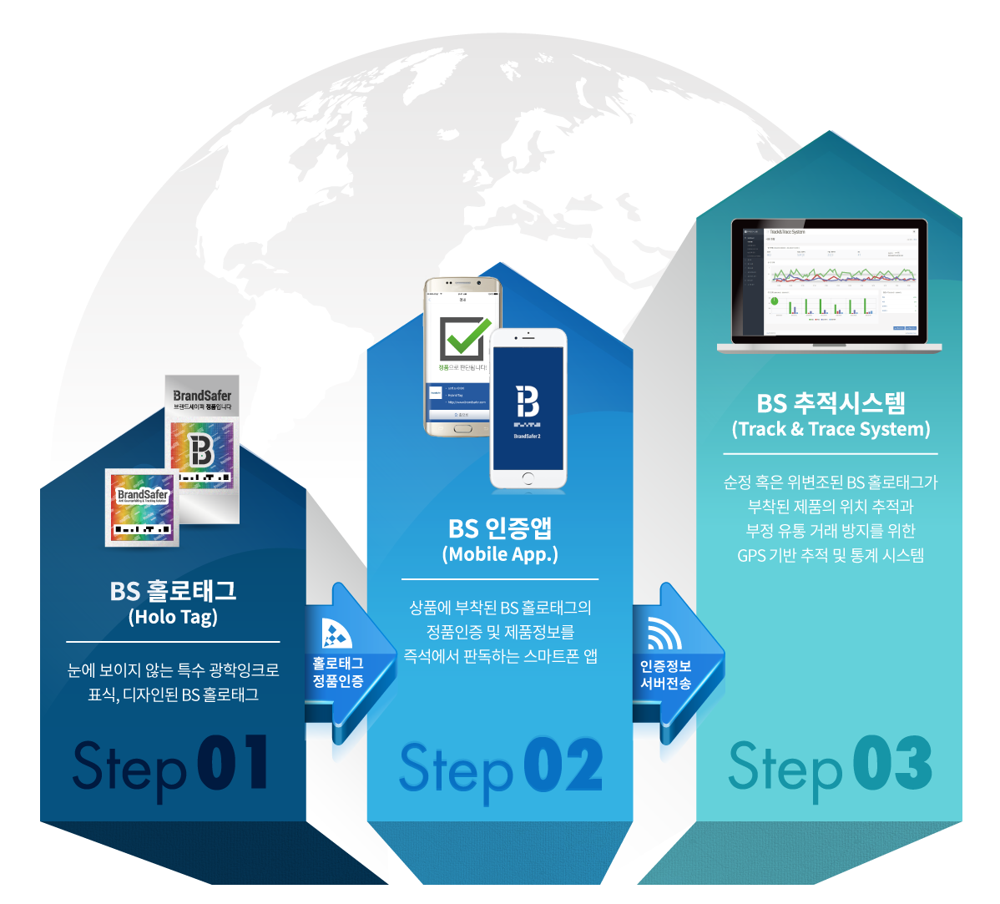

BS 홀로태그
위변조 방지 기술, 신뢰할 수 있는 방법
브랜드 세이퍼의 BS 홀로태그 기술은 눈에 보이지 않는 강력한 위변조 방지 기술을 기반으로 제작된 특수 홀로그램입니다. BS 홀로태그는 장시간 경과후에도 정품 감별 능력을 상실하지 않으며, 화재 등 외부요인으로 손상되더라도 판독 가능한 최소 면적 존재시에는 감별에 문제가 없어 법적으로 신뢰할 수 있습니다.
사업소개
유비쿼터스 네트워크 세상을 열어가는 전문 IT기업 아이크래프트
고객사의 브랜드 및 제품 보호를 위해 제품의 제조에서 판매까지의 흐름에 관한 현황을 확인하고, 소비자에게 진품을 구매할 수 있는 능력을 줌으로써 궁극적으로 고객사와 소비자의 각각의 니즈에 최적화된 방안을 제시
BS 홀로태그
위변조 방지 기술, 신뢰할 수 있는 방법
브랜드 세이퍼의 BS 홀로태그 기술은 눈에 보이지 않는 강력한 위변조 방지 기술을 기반으로 제작된 특수 홀로그램입니다. BS 홀로태그는 장시간 경과후에도 정품 감별 능력을 상실하지 않으며, 화재 등 외부요인으로 손상되더라도 판독 가능한 최소 면적 존재시에는 감별에 문제가 없어 법적으로 신뢰할 수 있습니다.
BS 인증앱
편리한 사용자 중심의 인증 어플리케이션
대중화된 다양한 스마트폰 기종과 OS에 호환되도록 개발된 BS 인증앱(Holotag Reader)은 스마트폰 카메라의 플래쉬에 반사되는 BS 홀로태그 빛의 스팩트럼을 분석하여 실시간으로 사용자에게 직접 위변조 감별을 할 수 있는 환경을 제공해 줍니다.
BS 추적시스템
GPS 기반 추적 시스템, 실시간 솔루션
소비자나 점원이 스마트폰 인증앱을 통해 판독한 제품 및 위치 정보는 T&T(Track & Trace) 시스템으로 전송되어, 기업 운영자는 실시간으로 해당 제품군의 위변조 감별 결과와 함께 유통 경로등의 시간, 공간적 정보를 획득, 데이타를 구축하여 분석 할 수 있는 이점을 제공합니다.